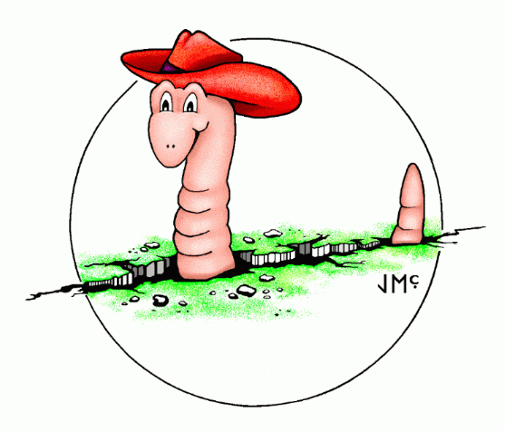

Earthworm Documentation V7.1| Section 1 |
Overview |
| Section 2 |
Automatic
Earthworm |
| Section 3 |
Interactive
Earthworm |
| Section 4 |
Release
Notes |
WARNING: The last tested version of interactive earthworm is v6.2.
For
various technical and operational reason's support for it is
discontinued
in v7.x. The code and documentation continue to be included as is
from
v6.3.
| U.S. Department of
the Interior, U.S. Geological Survey, Reston, VA, USA Contact: Questions? Issues? Subscribe to the Earthworm List (earthw). Privacy Statement || Disclaimer || FOIA || Accessibility |
Date last modified: March 3, 2007
last modified by Paul Friberg of ISTI.com